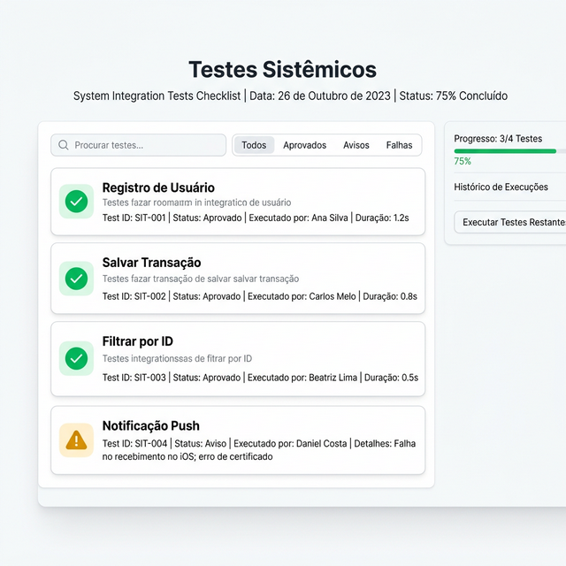

Estudo de Caso 10 — Testes Sistêmicos de Integração (+ API externa)
Objetivo da Semana
Certificar-se num ambiente realizado que o fluxo de uso da ponta a ponta não possui bloqueios críticos, elaborando um processo de Quality Assurance (QA). Se aplicável ao conceito do MVP, realizar integração com pelo menos uma API de mercado.
Passo a Passo da Atividade
Peça a sua IA colega de equipe para elaborar testes abrangentes descrevendo as entradas e os resultados esperados para cada fluxo construído (ex: um formulário digitado com erro e o bloqueio dele / um login realizado corretamente / verificar na coleção firebase se aquele dado salvo chegou inteiro).
Exemplo de Prompt: "Atuando como um Analista de QA (Quality Assurance), liste 5 cenários de testes sistêmicos ('caminho feliz' e 'caminhos de exceção') focados na funcionalidade de..."
Busquem recursos prontos de APIs que encaixem como luva no App (previsão metereológica via OpenWeatherMap, ou um Preencher Endereço via CEP a partir do publico ViaCEP). Cadastre o endpoint em "API Calls" no menu do FlutterFlow e ligue em uma "Action" de página.
Assinale de fato o que foi atingido de sucesso nos Requisitos construídos até a respectiva semana da disciplina, tirando Screenshots/Vídeos contínuos da jornada que funciona.
Para concluir as atividades desta semana, reúna todas as informações e artefatos gerados nos passos anteriores e preencha o template oficial de entrega. Faça uma cópia do documento para a sua conta Google e compartilhe-o com o professor.
Acessar Template: Checklist de QA e Testes de Integração Sistêmica
📱 Estudo de Caso: FinanCampus
Veja os resultados dos testes de integração do FinanCampus com o Firebase.

Resultado dos testes de integração (7/7 aprovados):
- ✅ Cadastro: novo usuário criado no Firebase Auth e documento inserido em
transacoesautomaticamente. - ✅ Login: token de autenticação retornado e armazenado; redirecionamento para Home.
- ✅ Create: documento inserido, visível na coleção
transacoesno console do Firebase. - ✅ Read: listagem exibe apenas as transações do usuário logado (Security Rules funcionando).
- ✅ Update: edição de transação refletida no banco em menos de 1 segundo.
- ✅ Delete: documento excluído do banco e removido da lista sem recarregar.
- ✅ Logout: sessão encerrada, tentativa de acessar dados retorna erro (Security Rules bloqueou).
API externa integrada: a API ViaCEP foi configurada via API Call para preencher automaticamente o endereço na tela de Configurações quando o usuário informa o CEP.